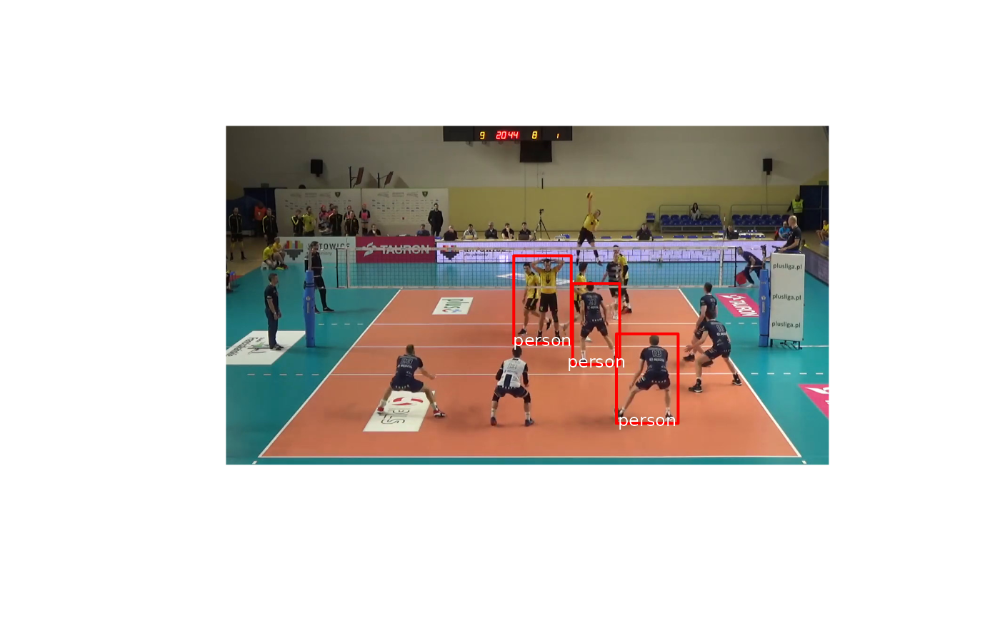
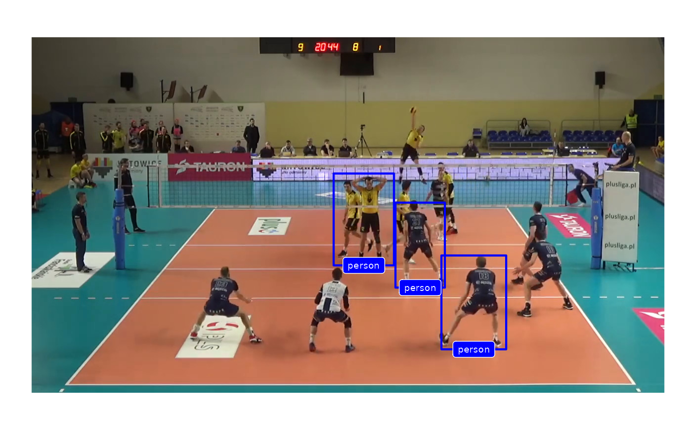

ovml_plot.RdPreview plot of detections over image using base graphics
string or image: filename of jpg image, or image as read by [jpeg::readJPEG()]
data.frame: as returned by ovml_yolo_detect()
list: parameters passed to lines (for ovml_plot()) or [ggplot2::geom_rect()] (for ovml_ggplot())
list: parameters passed to text
string: for ovml_ggplot(), the geom function to use for labels. Either "text" (use [ggplot2::geom_text()]) or "label" ([ggplot2::geom_label()])
## define some demo data
dets <- data.frame(class = rep("person", 3),
score = rep(0.99, 3),
xmin = c(829, 611, 736),
xmax = c(960, 733, 836),
ymin = c(88, 258, 213),
ymax = c(278, 444, 385),
stringsAsFactors = FALSE)
img <- system.file("extdata/images/2019_03_01-KATS-BEDS-frame.jpg", package = "ovml")
ovml_plot(img, dets, line_args = list(col = "red", lwd = 2))

ovml_ggplot(img, dets) + ggplot2::theme_void()
